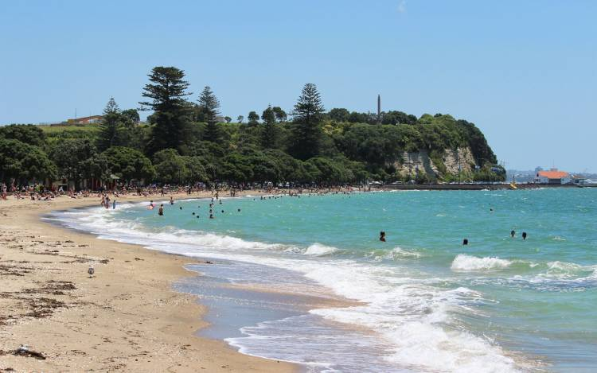
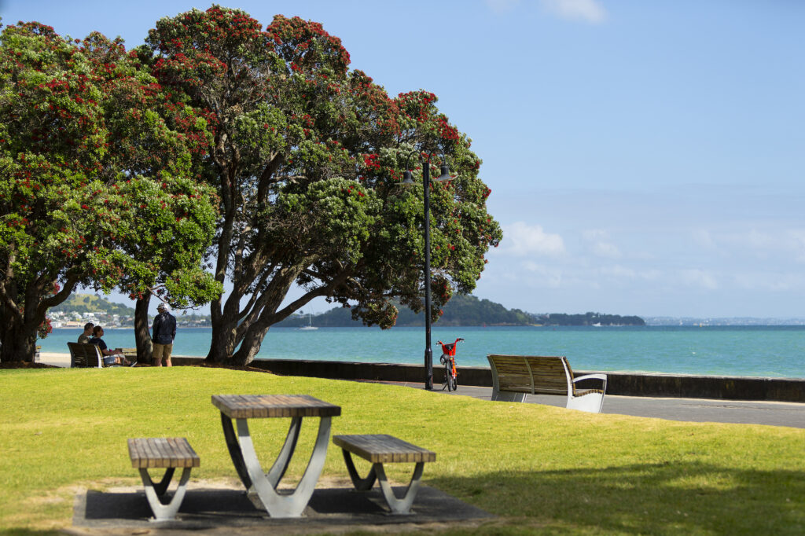

A Wounderful Day At Mission Bay
Last weekend, I spent a relaxing day at Mission Bay, and it turned out to be one of the most enjoyable holidays I have had in a long time. The weather was warm and sunny, with a gentle breeze coming from the sea. As soon as I arrived, I could see families having picnics, friends playing volleyball, and people walking along the beautiful waterfront.
I started my day with a leisurely walk beside the beach. The calm blue water sparkled under the sunlight, and the sound of the waves created a peaceful atmosphere. I took many photos of the scenery, including the boats sailing across the bay and the green parks surrounding the coastline. The fresh sea air made me feel refreshed and energized.

After my walk, I found a comfortable spot on the grass to enjoy a picnic lunch. I brought sandwiches, fresh fruit, and a cold drink. While eating, I watched children building sandcastles and people kayaking on the water. Everyone seemed cheerful and relaxed, which made the holiday even more enjoyable.
In the afternoon, I explored more of the area. I rented a bicycle and rode along the coastal path, enjoying the stunning views of the harbor. Along the way, I stopped to admire the colorful flowers, tall palm trees, and the peaceful beaches. I also treated myself to an ice cream from a nearby café, which was the perfect snack on such a beautiful day.

As the sun began to set, the sky gradually turned shades of orange, pink, and purple. The sunset over Mission Bay was breathtaking. I sat quietly by the beach, listening to the waves and appreciating the beauty of nature. It was a perfect ending to a wonderful holiday.
My trip to Mission Bay gave me the opportunity to relax, enjoy nature, and forget about the stress of daily life. The combination of beautiful scenery, pleasant weather, and a peaceful atmosphere made it an unforgettable experience. I returned home feeling happy, refreshed, and grateful for such a memorable day. I hope to visit Mission Bay again soon and create even more wonderful memories.